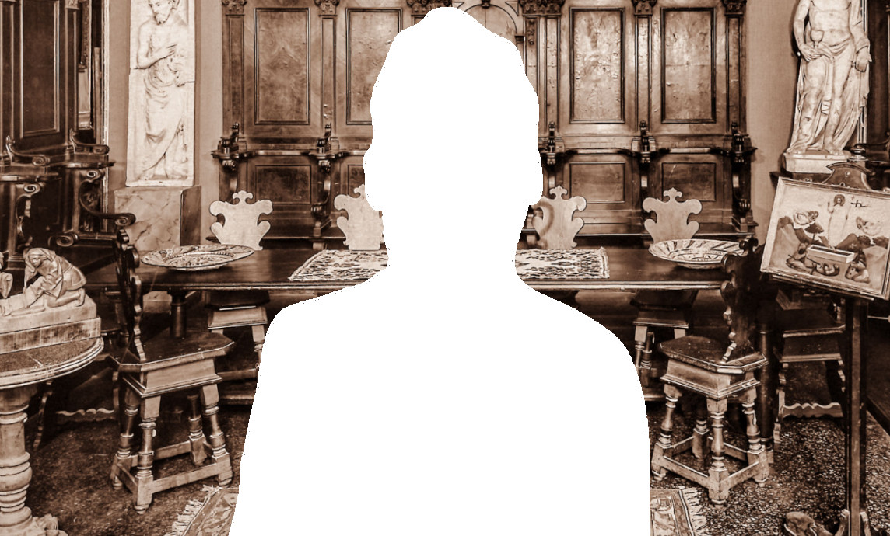

Pospisil

Consulta le banche dati della Fondazione
Federico Zeri e ricerca fotografie, documenti,
cataloghi d'asta, fondi e notizie
sull'antiquario corrente.
Mentre il padre Arturo Pospisil (1868-1924) praticò la professione di fotografo a Padova con due studi, uno in via del Sale 1, l’altro in via Pedrocchi, Francesco, di cui si ignorano le date di nascita e morte, si dedicò al commercio antiquario a Venezia. La sua attività, con sede nel prestigioso Palazzo Sagredo, sul Canal Grande, è documentata dal 1936.
Specializzato in arte veneziana ma attivo in molti altri settori, lavorò con gli austriaci Kajetan "Kai" Muehlmann, storico dell’arte, e Franz Kieslinger (1891-1955), studioso e mercante, entrambi coinvolti con posizioni di alta responsabilità nel regime nazista. Proprio tramite Muehlmann, Pospisil offrì a Hermann Goering opere di Tiepolo. Anche se la vendita non andò a buon fine, i legami con il gotha nazista gli offrirono la possibilità di viaggiare tra Francia e Belgio alla ricerca di opere per il ‘Dienststelle Muehlmann’, un ufficio sito a L’Aja e diretto da Muehlmann stesso dove confluivano opere d’arte acquistate o più spesso confiscate agli Ebrei da vendere a facoltosi e appassionati membri del Partito.
Dopo la fine della Seconda guerra mondiale, Pospisil continuò la sua attività di mercante stringendo dagli anni Cinquanta un forte legame con uno dei massimi esperti di arte veneta, Rodolfo Pallucchini, ma anche allargando il suo interesse all’arte contemporanea, come testimonia la ricca documentazione su opere di artisti del Novecento proveniente dal suo archivio confluita nella fototeca Zeri.
Francesco fu anche collezionista e studioso. Nel 1946 scrisse, insieme alla figlia Maria, una monografia sul pittore Guglielmo Ciardi pubblicata dalla Fratelli Alinari. La sua figura di marchand-amateur venne ricordata in un articolo del quotidiano “La Repubblica” uscito in occasione della vendita Finarte dei beni di Maria Pospisil, tenutasi nel 1987 a Palazzo Sagredo.